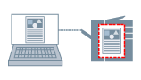

Приостановление процесса печати
Данные для печати можно отправить в очередь удержания (область временного хранения) принтера. Настройки и порядок печати данных в очереди удержания также можно изменять. Эта функция удобна, если есть необходимость выполнить пробную распечатку.
|

|
|
Удержание данных для печати
|
1.
Откройте вкладку [Основные настройки], [Макет страницы], [Окончательная обработка], [Источник бумаги] или [Качество].
2.
Выберите [Способ вывода] → [Удержание] → нажмите [ОК].
3.
Нажмите [Подробно] → установите наименование данных → нажмите [ОК].
4.
Нажмите [ОК] на экране драйвера принтера.
5.
Нажмите кнопку печати в приложении → нажмите [ОК] в диалоговом окне [Детали удержания].
Данные для печати отправлены в очередь удержания принтера. Данные выводятся согласно инструкциям, подаваемым с панели управления принтера или с помощью удаленного пользовательского интерфейса.
Справки
Если выбрано [Введите имя] в диалоговом окне [Детали удержания] а в поле [Имя], название не введено, задание на печать отправляется без названия.